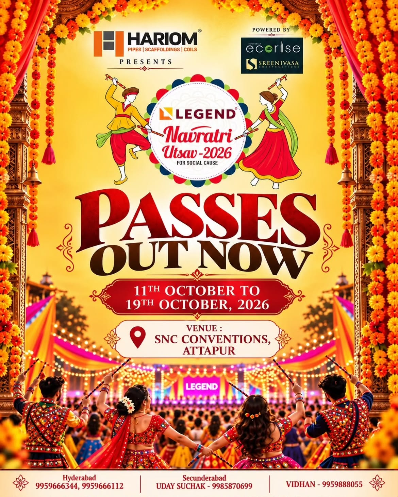

GARBA & DANDIYA IN HYDERABAD
Legend
Navratri Utsav.
Nine nights of Garba, Dandiya and festive celebrations.
A different theme every evening. A celebration for a social cause.
WHEN11–19 October 2026Nine nights of celebration
WHERESNC ConventionsAttapur, Hyderabad
Contact the organisers for pass prices, availability and entry timings.
Made for memories.
ABOUT THE EVENT
Garba. Dandiya.
Celebrating together.
The familiar rhythm of Garba. The sparkle of mirror work. The joy of finding your people in a circle of colour.
Legend Navratri Utsav brings nine nights of celebration to Hyderabad — with a new theme every evening and a shared spirit of togetherness, for a social cause.
11–19 OCTOBER 2026
Your nine-night
festival schedule.
Choose a date below to see its theme,
participation details and full event poster.
CELEBRATION WITH MEANING
When we come together,
the joy goes further.
At the heart of Legend Navratri Utsav is a simple thought:
a beautiful celebration, for a social cause.
MEET US ON THE DANCE FLOOR
Your nine-night
destination.
SNC Conventions
Attapur, Hyderabad
Near Pillar No. 268
For entry timings and venue guidance, contact our team.

HYDERABAD, LET’S CELEBRATE. ✧A LITTLE COLOUR. A LOT OF JOY.
The colours of Legend.
A glimpse of our 2026 festival artwork. Follow along for updates and moments from the celebration.
EXPERIENCE THE CELEBRATION
Feel the rhythm.
Live the moment.
A glimpse into the world of Legend Navratri Utsav. Press play, turn up the sound, and get into the festive spirit.
Join the celebration ↗YOUR PLACE IN THE CELEBRATION
Get your passes.
Speak to the Legend team.
Choose a contact below to call the organisers.
Ask about pass prices, availability and daily entry timings.
Also reach our Hyderabad team at 99596 66112 ↗
BEFORE YOU ARRIVE
A few things
to know.
When and where is Legend Navratri Utsav?
The festival runs from 11 to 19 October 2026 at SNC Conventions, Attapur, Hyderabad, near Pillar No. 268. Please call the organisers for daily entry timings.
How can I get my passes?
Contact the listed Legend team members for current pass prices, availability and booking. Hyderabad: 99596 66344 or 99596 66112.
Is there a theme for every night?
Yes! Explore all nine nights above, from Mirror Magic and Ras Leela to creative accessories, group dance and the Grand Finale. Each night’s official poster includes its theme.
What are the group dance and kids’ themes?
16 October features Group Dance with Prop for groups of 9–12 members. On 17 October, children aged 0–5 can imagine Navratri in the year 2126 with the Best 2126 Look theme. Contact the organisers for participation details.
TOGETHER, WE MAKE IT LEGEND